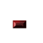
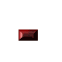

MY IMMORTAL
I'm so tired of being here,
suppressed by all my childish fears.
And if you have to leave
I wish that you would just leave,
'cause your presence still lingers here
and it won't leave me alone.
These wounds won't seem to heal.
This pain is just too real.
There's just too much that time cannot erase.
When you cried I'd wipe away all of your tears,
when you'd scream I'd fight away all of your fears,
and I've held your hand through all of these years,
but you still have all of me.
You used to captivate me
by your resonating light.
Now I'm bound by the life you left behind.
Your face it haunts my once pleasant dreams.
Your voice, it chased away all the sanity in me.
These wounds won't seem to heal.
This pain is just too real.
There's just too much that time cannot erase.
When you cried, I'd wipe away all of your tears,
when you'd scream, i'd fight away all of your fears,
and i've held your hand through all of these years,
but you still have all of me.
I've tried so hard to tell myself that you're gone.
But though you're still with me
I've been alone all along.
When you cried I'd wipe away all of your tears,
when you'd scream I'd fight away all of your fears,
and i've held your hand through all of these years,
but you still have all of me, oh
Me, oh
Me, oh

EVERYBODY'S FOOL
perfect by nature
icons of self indulgence
just what we all need
more lies about a world that
never was and never will be
have you no shame don't you see me
you know you've got everybody fooled
look here she comes now
bow down and stare in wonder
oh how we love you
no flaws when you're pretending
but now I know she
never was and never will be
you don't know how you've betrayed me
and somehow you've got everybody fooled
without the mask where will you hide
can't find yourself lost in your lie
i know the truth now
i know who you are
and i don't love you anymore
it never was and never will be
you don't know how you've betrayed me
and somehow you've got everybody fooled
it never was and never will be
you're not real and you can't save me
somehow now you're everybody's fool

I BELIEVE IN LOVE
I feel the heat around me
I feel the beat surrounds me
Could this be for real, I wonder
No need for hesitation
It's time for celebration
Will this be the night I've waited for
When angels fall in love
Heaven knows, does it show, oh
If this love, will last for eternity
Set me on fire
[Chorus]
I believe, I believe in love
And like the stars above
They shine, let it shine over me
Set me free I believe in you
And that our love is true
Oh I believe, I believe
I see that people dancing
Boys and girls romancing
They want this to last forever
Cause underneath the moonlight
Everything is alright
We're reaching our hands up in the air
To where the souls alive
Heaven knows, that it shows oh
If this love, will last for eternity
Set me on fire
[Chorus]
How could I doubt, what was meant to be
Everything I needed was in front of me
Your healing touch, will lift me up in the sky, so high
[Chorus]
Runaway
Say it's true, there's nothing like me and you
I'm not alone, tell me you feel it too
And I would run away
I would run away, yeah..., yeah
I would run away
I would run away with you
Cause I am falling in love with you
No never I'm never gonna stop
Falling in love with you
Close the door, lay down upon the floor
And by candlelight, make love to me through the night
(through the night, through the night...)
Cause I have run away
I have run away, yeah..., yeah
I have run away, run away
I have run away with you
Cause I am falling in love (falling in love) with you
No never I'm never gonna stop
Falling in love with you...
With you...
And I would runaway
I would runaway, yeah..., yeah
I would runaway (runaway)
I would runaway with you
Cause I am falling in love (falling in love) with you
No never I'm never gonna stop
Falling in love with you...
Falling in love (falling in love) with you
No never I'm never gonna stop falling in love with you
With you, my love, with you...
na ni na ni na na...
(With you, with you, with you, with you)
CLOSER
I see you, walking everyday
With a smile beneath frown
But I won't look away, yeah
What does it mean
What's there to see
If I look
Closer, closer, closer, closer
Closer, closer, closer, closer
Where are you going
And what are you thinking at all
Your eyes show nothing more
Than a dazed oblivion
What does it mean
What will I see
When I look
Closer, closer, closer, closer
Closer, closer, closer, closer..., ah, yeah
You don't see me
Watching everyday
My smile could warm your frown
And I'd never look away, never look away
There's more to me (there's more to me)
Than what you see
When you look
Closer, closer, closer, closer
Closer, closer, closer, closer
Closer, (close....r) closer, closer, closer..., ah yeah-ie...
Closer, (ah ha) closer, (ah ha) closer, no, no, no, (ah ha)
(ah ha, ah ha, ah ha, ah ha, ah ha,) ah, no, no...

LOOKING IN THE EYES OF LOVE
I wonder should I tell you
About all the crazy things that I have done
I've been hiding all my life
When I should have stayed
I tried to run...
I was searching for an answer
In a world so full of strangers
But what I found was never really enough
Now that I've found you
I'm looking in the eyes of love (In the eyes of love)
Baby you've been good to me
Oh, so much more that you could know, yeah, yeah
I never thought that I would find
Someone who's so sweet and kind
Like you...
Please believe me when I say
This time I won't run away
I swear be all the heaven's stars above
Now that I've found you
I'm looking in the eyes of love
Looking in the eyes of love...
I can see forever, yeah...
I can see you and me
Walking in this world together
Oh, my heart's found a hope...
I've been dreaming of...
Now that I've found you
I'm looking in the eyes of love
Looking in the eyes of love...
I can see (forever), I can see forever
I can see you and me
Walking in this world together
Oh, my heart's found a hope
I've been dreaming of...
Now that I've found you, I've found you
I'm looking in the eyes of love..., yeah
Oh...

LADIES NIGHT
Ooh oh yeah yeah, Oh what a night
It's ladies night
This is your night tonight,
Everything is going to be alright
This is your night tonight,
C'mon girls
Girls, we've all got one
A night that's special everywhere
From New York to Hollywood
It's ladies night and girl
The feeling's good
[Chorus]
Oh yes, it's ladies night
And the feeling's right
Oh yes, it's ladies night
Oh what a night (oh what a night)
Oh yes, it's ladies night
And the feeling's right
Oh yes, it's ladies night
Oh what a night (oh what a night)
This is your night tonight, everything' s gonna be alright
This is your night tonight, everything' s gonna be alright
Romantic lady, ooh oh yeah, single baby
Mm sophisticated mama (woooooh)
Come on you disco baby, yeah, yeah
Stay with me tonight
If you hear any noise
It ain't the boys, it's ladies night, shhh, uh huh
Come on girls
Gonna step out ladies night
Steppin' out ladies night
Gonna step out ladies night
Steppin' out ladies night
[Chorus]
On disco lights your name will be seen
You can fulfill all your dreams
Party here, party there, everywhere
This is our night, ladies
You got to be there
This is your night tonight,
Everything is going to be alright
This is your night tonight,
Everything is going to be alright
Oh ladies night
This is your night tonight,
Everything is going to be alright (11 X)

SOMEONE LIKE ME
Don't let your head rule you heart
Don't let your world be torn apart
Don't keep it all to yourself
Just let all your emotions run free with someone like me
That's the way it should be
Someone like me
I know Its hard when you're feeling down
To lift your feet up off the ground
We make mistakes but doesn't everybody
You don't always have to agree with someone like me
That's the way it should be
Someone like me
We know the story so far (what you want and who you are)
What you want and who you are (Free)
Let all your emotions run free
You don't always have to agree
With someone like me
That's the way it should be
Someone like me
Someone like me

LOVE DOESN'T HAVE TO HURT
I learned a lesson in my life
But I learned it the hard way
I don't know why I used to fall in love
With the wrong kind
Then I suffer so much pain
But I only had myself to blame
maybe you came
In the nick of time to show me
Love doesn't have to hurt
To feel good
It's such a revelation
With you I can be myself
I know it should
Don't have to cry
Don't have to fight
Don't have to die
Not after tonight
Show me
Love (Love)
Doesn't have to hurt to feel good
Darling now it seems to me
Like I've always known you
But I still shudder
When I think back
On the lonely times
I used to keep all my feelings inside
From your eyes I have nothing to hide
Baby you came
In the nick of time to show me
Love doesn't have to hurt
To feel good
It's such a revelation
With you I can be myself
I know it should
Don't have to cry
Don't have to fight
Don't have to die
Not after tonight
Show me
Love (Love)
Doesn't have to hurt to feel good
Yeah yeah yeah yeah yeah yeah
Thank you baby
Lying here beside you
Feels so fine
Talking about everything in this heart of mine
Love doesn't have to hurt
To feel good
It's such a revelation
With you I can be myself
I know it should
Don't have to cry
Don't have to fight
And in your arms
Not after tonight
Show me
Love (Love)
Doesn't have to hurt to feel good
Yeah yeah
Thank you baby, thank you baby

WHOLE AGAIN
If you see me walking down the street
Staring at the sky
And draggin' my two feet
You just pass me by
It still makes me cry
But you can make me whole again
And if you see me
with another man
Laughing and I'm joking
Makin' the best of this I can
I ain't try to put you down
Baby I still want you around
Coz you can make me whole again
Looking back on where we first met
I cannot escape
And I cannot forget
Baby you're the one
You still turn me on
You can make me whole again
Time is layin' heavy on my heart
Seems I've got too much of it
Since we've been apart
My friends make me smile
If only for a short while
If you can make me whole again
Looking back on where we first met
I cannot escape
And I cannot forget
Baby you're the one
You still turn me on
You can make me whole again
for now I'll have to wait
but baby if you change your mind don't be too late
coz I just can't go on
it's already been too long
but you could make me whole again
Looking back on where we first met
I cannot escape
And I cannot forget
Baby you're the one
You still turn me on
You can make me whole again
Looking back on where we first met
I cannot escape
And I cannot forget
Baby you're the one
You still turn me on
You can make me whole again
Oh, baby you're the one
You still turn me on
You can make me whole again